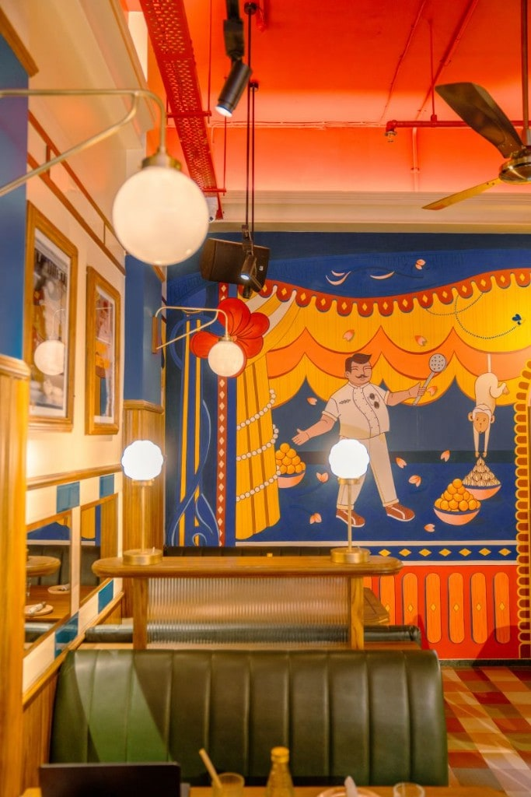
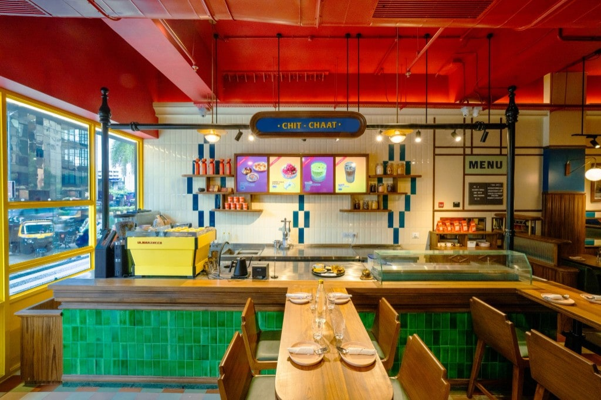
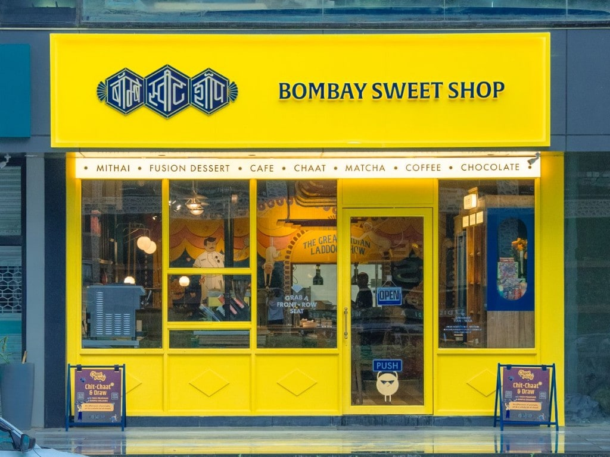
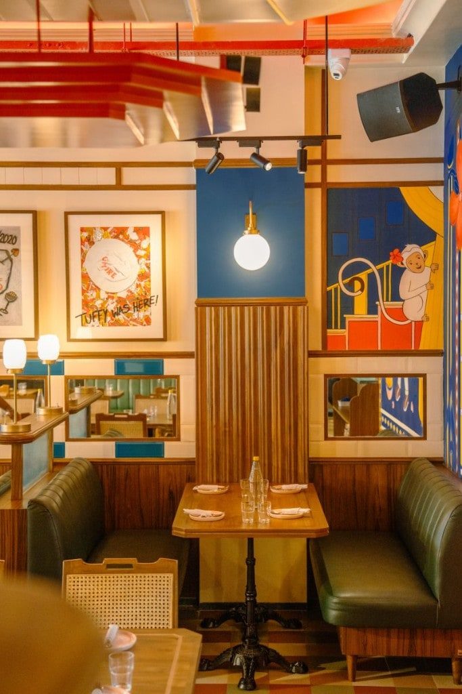
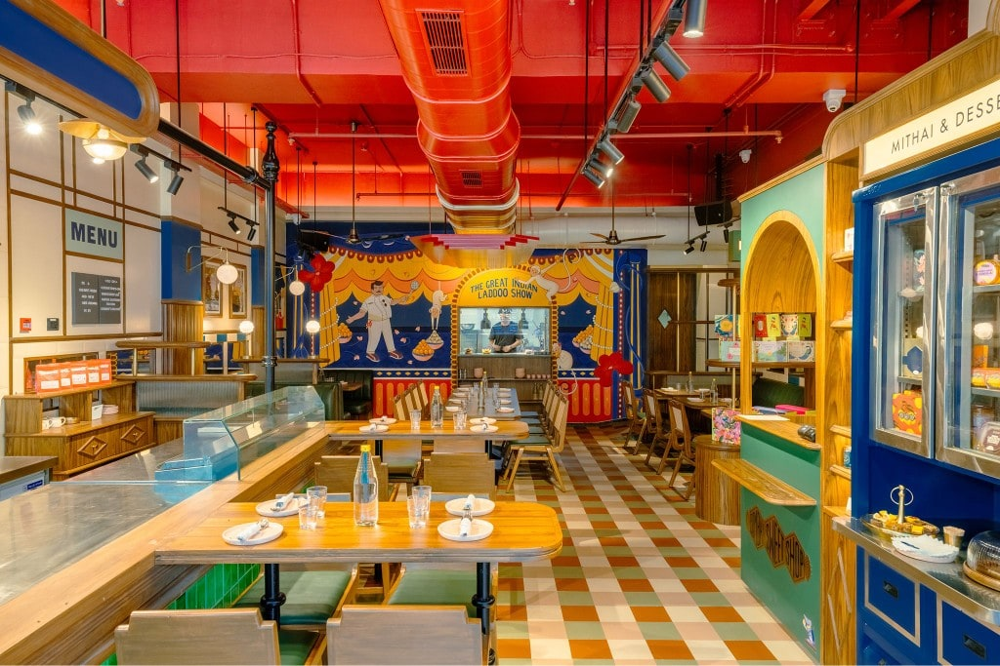
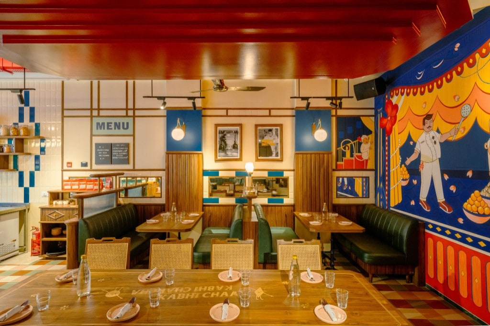
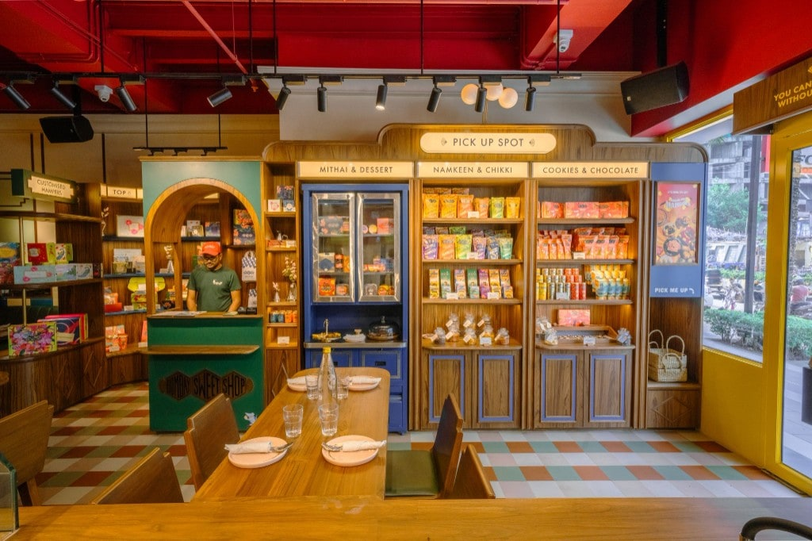

Interior design
Bombay Sweet Shop Oshiwara
One of the most rewarding projects I worked on at Language.Architecture.Body (LAB) was Bombay Sweet Shop, Oshiwara. Inspired by Bombay's Art Deco theatres, this project taught me how thoughtful planning, multiple iterations, and attention to detail come together to create meaningful spaces. From optimizing every square foot to balancing colours with functionality, it was an experience that shaped the way I think about design. Grateful to have worked with an incredible team and clients who truly trusted the design process.






